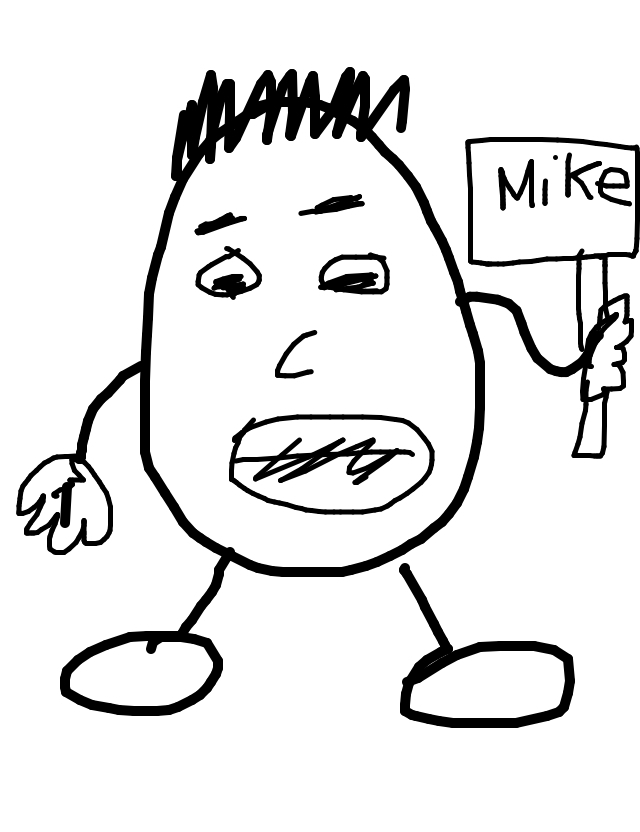

so rickyc drew...
so jackcheng wrote...
Jot Potato lost his voice but is still trying to get Mike's attention.
so tasia drew...
so matt wrote...
Your boss, Mr. PotatoHead, would like to see you in his office.
so irondavy drew...
so jason wrote...
"that'd be great" said the bastard child of the planters peanut guy and mrs potato head, doing his best bill lumberg impression. To his dismay, Toby was not impressed
so mike drew...